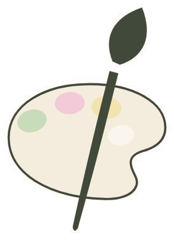

Datenschutz
Wie wir mit euren Daten umgehen — kurz und ehrlich.
1. Verantwortliche Stelle
Verantwortlich für die Datenverarbeitung auf dieser Website ist:
Keramikmalstudio Eckstück GbR, vertreten durch Andrea Bähr und Vicky Graf
Grabenstraße 19, 66606 St. Wendel
Telefon: 06851 9381349
E-Mail: ✎ E-Mail-Adresse fehlt noch — bitte eintragen
2. Grundsätzliches und Rechtsgrundlagen
Wir verarbeiten personenbezogene Daten nur im erforderlichen Umfang und auf Grundlage der Datenschutz-Grundverordnung (DSGVO). Rechtsgrundlagen sind insbesondere Ihre Einwilligung (Art. 6 Abs. 1 lit. a DSGVO), die Anbahnung und Erfüllung eines Vertrags sowie die Bearbeitung Ihrer Anfrage (lit. b) und unser berechtigtes Interesse an einem sicheren und funktionsfähigen Webauftritt (lit. f).
3. Hosting
Diese Website wird bei Hostinger (Hostinger International Ltd., 61 Lordou Vironos Street, 6023 Larnaca, Zypern) gehostet. Beim Aufruf der Seite werden technisch notwendige Daten in Server-Logfiles verarbeitet (Art. 6 Abs. 1 lit. f DSGVO). Mit dem Anbieter besteht ein Auftragsverarbeitungsvertrag nach Art. 28 DSGVO bzw. ist ein solcher abzuschließen.
4. Server-Logfiles
Der Provider erhebt und speichert automatisch Informationen, die Ihr Browser übermittelt: IP-Adresse, Datum und Uhrzeit des Zugriffs, die abgerufene Datei, übertragene Datenmenge, Browsertyp und Betriebssystem sowie die zuvor besuchte Seite. Diese Daten dienen dem sicheren Betrieb der Website, werden nicht bestimmten Personen zugeordnet, nicht mit anderen Datenquellen zusammengeführt und nach kurzer Zeit gelöscht.
5. Kontaktaufnahme
Auf dieser Website gibt es kein Kontaktformular. Wenn Sie uns per Telefon, E-Mail oder über Instagram kontaktieren, verarbeiten wir Ihre Angaben (Name, Kontaktdaten, Inhalt der Anfrage) ausschließlich zur Bearbeitung Ihres Anliegens (Art. 6 Abs. 1 lit. b bzw. lit. f DSGVO). Die Daten werden gelöscht, sobald sie für den Zweck nicht mehr erforderlich sind und keine gesetzlichen Aufbewahrungspflichten entgegenstehen.
6. Terminbuchung über Shore
Für die Reservierung von Maltischen verlinken wir auf unsere Buchungsseite beim Anbieter Shore (Shore GmbH, Rosenheimer Straße 145 d, 81671 München). Erst wenn Sie diesen Link anklicken, verlassen Sie unsere Website; die dort eingegebenen Daten (z. B. Name, Kontaktdaten, Wunschtermin) werden von Shore verarbeitet. Es gilt dann die Datenschutzerklärung von Shore. Vor dem Klick werden keine Daten an Shore übermittelt.
7. Google Maps
Wir binden keine Google-Maps-Karte direkt in diese Website ein. Die Buttons „Route planen" und „Karte bei Google Maps öffnen" sind reine Links. Erst wenn Sie einen dieser Links anklicken, öffnet sich Google Maps und es werden Daten (u. a. Ihre IP-Adresse) an Google übertragen. Anbieter ist Google Ireland Limited, Gordon House, Barrow Street, Dublin 4, Irland.
8. Instagram
Wir verlinken auf unser Instagram-Profil. Es handelt sich um einen einfachen Link, nicht um ein eingebettetes Plugin — beim bloßen Aufruf unserer Website werden also keine Daten an Instagram übertragen. Erst beim Klick gelangen Sie zu Instagram; Anbieter ist Meta Platforms Ireland Ltd., Merrion Road, Dublin 4, Irland.
9. Schriftarten
Die verwendeten Schriftarten (Cormorant Garamond, Karla) werden lokal von unserem eigenen Server ausgeliefert. Es besteht keine Verbindung zu Servern Dritter — insbesondere nicht zu Google Fonts — und es wird keine IP-Adresse an Dritte übermittelt.
10. Cookies und Tracking
Diese Website setzt keine Cookies und bindet keine Analyse-, Tracking- oder Marketingdienste ein. Es findet kein nicht notwendiger Zugriff auf Ihr Endgerät statt. Ein Cookie-Banner ist deshalb nicht erforderlich.
11. Ihre Rechte
Sie haben jederzeit das Recht auf Auskunft (Art. 15 DSGVO), Berichtigung (Art. 16), Löschung (Art. 17), Einschränkung der Verarbeitung (Art. 18), Datenübertragbarkeit (Art. 20) sowie Widerspruch gegen die Verarbeitung (Art. 21). Eine erteilte Einwilligung können Sie jederzeit mit Wirkung für die Zukunft widerrufen (Art. 7 Abs. 3 DSGVO). Wenden Sie sich dafür an die oben genannten Kontaktdaten.
12. Beschwerderecht bei der Aufsichtsbehörde
Unabhängig davon steht Ihnen ein Beschwerderecht bei einer Datenschutz-Aufsichtsbehörde zu (Art. 77 DSGVO). Zuständig für uns ist das Unabhängige Datenschutzzentrum Saarland, Fritz-Dobisch-Straße 12, 66111 Saarbrücken.